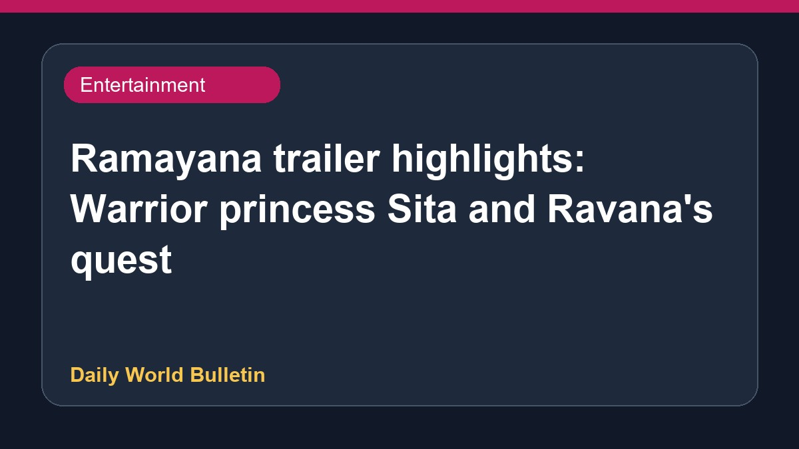

Ramayana trailer highlights: Warrior princess Sita and Ravana's quest

Entertainment reports on the Ramayana trailer reveal key elements from Nitesh Tiwari's upcoming film, including Sita depicted as a warrior princess and Ravana fighting to secure the throne. The promotional video showcases Ranbir Kapoor portraying Rama alongside Yash as Ravana in preparation for a major cinematic clash. Meanwhile, audiences and reviewers have discussed various aspects of the spectacle, noting the strong visual presence of the lead actors while questioning the initial absence of Lord Hanuman and discussing the emotional depth portrayed in the footage. Further details remain limited.
Original source: Entertainment Sources
Ramayana trailer key takeaways: Sita as warrior princess, Ravana’s fight to become king - The Indian Express ↗
Ramayana trailer key takeaways: Sita as warrior princess, Ravana’s fight to become king - The Indian Express ↗